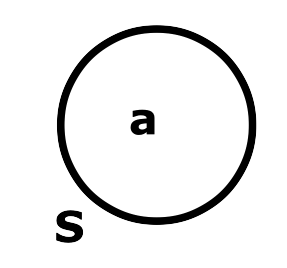
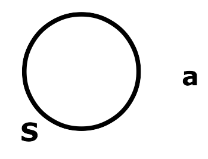
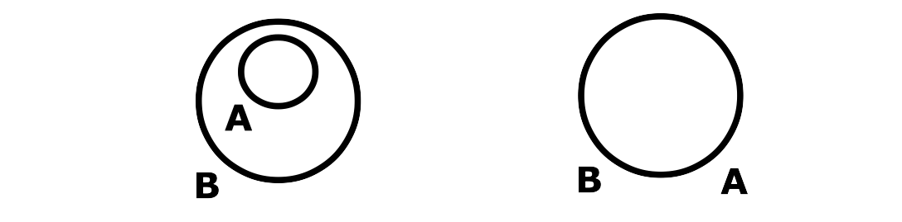
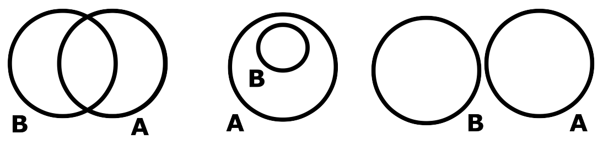
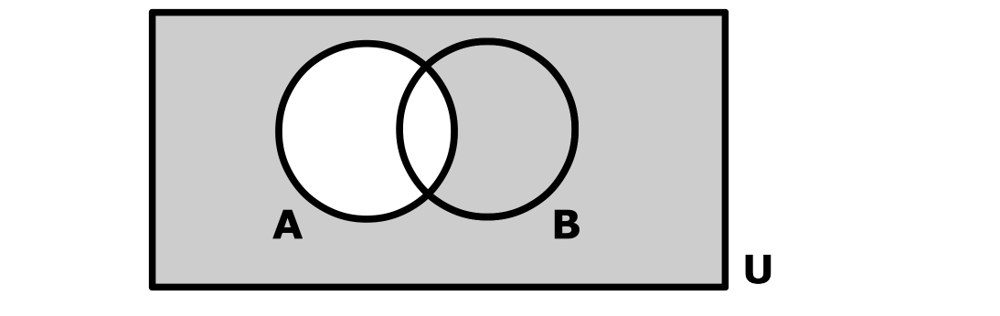

Module 05: Sets and Predicate Logic
Sets
A set is an unordered collection of distinct, separate objects. Sets do not allow duplicates, and the order of the elements is irrelevant. Sets are denoted using curly brackets, with all elements separated by commas.
For example, set A has elements 1, 2, 3, and 4; and set B has elements 'red', 'green', 'blue', and 'pink':
A = {1, 2, 3, 4}
B = {'red', 'green', 'blue', 'pink'}
Set elements can be of any type and do not need to be related. For example, C = {a, 2, 1, b, 'blue', 'yellow'} is a valid set. Furthermore, two sets are considered equal if they contain the same elements, regardless of order; therefore, D = {4, 3, 2, 1} is equal to A.
A set can also be an element of a set, allowing for recursive definitions. For example, set E = {a, b} is different than set F = {{a}, b}, since the elements of E are both letters, and the elements of F are a letter and another set, which has a letter as an element. Observe carefully that a is not an element of the set F, since this is not "transitive": the parent of my parent is not therefore also my parent!
The empty set (a set with no elements) is denoted as {} or ∅. The universal set (denoted as 𝒰) contains all elements under consideration in a given context.
Set operations can be divided into the ones that evaluate to true/false and the ones that return a new set:
Contains (∈)
The operation x ∈ S means S contains x (or equivalently x is an element of S), and it evaluates to true if an element x is in set S.

Does Not Contain (∉)
The operation x ∉ S means S does not contain x, and it evaluates to true if an element x is not in set S.

Subset (⊆)
The operation A ⊆ B means A is a subset of B, and it evaluates to true if all elements in A are also elements in B. B may or may not have other elements.

Not a Subset (⊈)
The operation A ⊈ B means A is not a subset of B, and it evaluates to true if at least one element in A is not an element in B.

Proper Subset (⊂)
The operation A ⊂ B means A is a proper subset of B, and it evaluates to true if all elements in A are also elements in B, and B has at least one extra element that is not in A.
Notice that ∈ is an operator that takes an operand on its left that may be any type of thing and on its right a set, while ⊆ is an operator that takes two operands, both of which must be sets.
Equal (=)
The operation A = B means A is equal to B, and it evaluates to true if all elements in A are in B, and all elements in B are in A, i.e., both sets have exactly the same elements.
Union (⋃)
The operation C = A ⋃ B means A union B and returns a set C, which is the set of all elements that are at least in one of A or B.
Intersection (⋂)
The operation C = A ⋂ B means A intersection B and returns a set C, which is the set of all elements that are common to both A and B.

Difference (−)
The operation C = B - A means the difference of B and A and returns a set C, which is the set of all elements that are in B but not in A.
Complement (c)
The operation C = Ac means the complement of A and returns a set C, which is the set of all elements in the universal set that are not in A.

Common Sets
| Integers | ℤ | {..., -2, -1, 0, 1, 2, ...} |
| Positive integers | ℤ+ | {1, 2, 3, 4, ...} |
| Non-zero integers | ℤ* | {..., -2, -1, 1, 2, ...} |
| Real Numbers | ℝ | {..., 20/6, 0, 1, √2, π, ...} |
| Rational Numbers | ℚ | {a/b, a ∈ ℤ, b ∈ ℤ*} |
| Irrational Numbers | ℚ | {x ∈ ℝ, x ∉ ℚ} |
| Natural Numbers | ℕ0 | {0, 1, 2, 3, 4, ...} |
| ℕ1 | {1, 2, 3, 4, ...} |
Predicates
A predicate is a logical statement that can be true or false depending on the values of its variables. Unlike standard propositions, predicates accept variables as inputs. For example, for the predicate P(x): x2 > x the variable x can take any number, but the predicate evaluates to only true or false, for for x=1, P(x) is false, and for x=2, P(2) is true.
If x belongs to a set D, the truth set of a predicate P(x) is given by all elements in D that make P(x) true. We denote it by S = {x ∈ D | P(x)} which reads as "all elements x in D such that P(x) holds". Notice that the symbol "|" means "such that". For example, for D = {-1, 0, 1, 2, 3} and P(x): x2 > x we have that the truth set S= {-1, 2, 3}.
Quantifiers define how variables relate to the domain. When connected to the universal quantifier, represented by ∀ (read as for all), the variable will represent all elements found in the domain. When connected to the existential quantifier, represented by ∃ (read as exists), the variable will represent at least one of the elements found in the domain.
For example, consider that F is the domain of all animals in a forest, and Lion(x) is true when x is a lion. ∃x ∈ F, Lion(x) means There is at least one lion in the forest, while ∀x ∈ F, Lion(x) means All animals in the forest are lions.
The negation of a universal statement is an existential statement with the negated predicate, and vice versa.
~∀x ∈ D, Q(x) ≡ ~(∀x ∈ D, Q(x)) ≡ ∃x ∈ D, ~Q(x)
~∃x ∈ D, Q(x) ≡ ~(∃x ∈ D, Q(x)) ≡ ∀x ∈ D, ~Q(x)
Note: the quantifier itself is not something you can negate, as it defines a variable's domain. For example, the statement (~∀x ∈ D), Q(x) is ill-defined since ∀x ∈ D means that x represents all elements in D, it is a declaration of x and cannot be evaluated to true or false; therefore, it cannot be negated. So ~∀x ∈ D, Q(x) can only mean ~(∀x ∈ D, Q(x)).
Within a predicate, it is possible to use any equivalence laws to create equivalence predicates. For example, the following predicates are all equivalent based on De Morgan's law.
~∀x ∈ D, ~(P(x) ⋀ Q(x))
~∀x ∈ D, (~P(x) ⋁ ~Q(x))
∃x ∈ D, ~(~P(x) ⋁ ~Q(x))
∃x ∈ D, (P(x) ⋀ Q(x))
Order of Quantifiers
The order of quantifiers in a predicate is important; changing the order can alter the meaning of the statement. The predicate ∀x ∈ D, ∃y ∈ D, P(x, y) is not equivalent to ∃y ∈ D, ∀x ∈ D, P(x, y). In predicate logic, quantifiers are evaluated from left to right. This means that when we encounter an existential quantifier, we can choose a value for that variable using all previously defined information. So in the predicate ∀x ∈ D, ∃y ∈ D, P(x, y), we can choose a different value of y for each x, while in the predicate ∃y ∈ D, ∀x ∈ D, P(x, y) we have to choose only one y that has to work for all values of x.
Consider the predicate ∀x ∈ ℤ+, ∃y ∈ ℤ+ y = x+x. Here, for each value of x, we are allowed to choose a different value of y. Since x is defined first, we can use its value to define y accordingly. For example, if x = 1, we can choose y = 2; if x = 2, then y = 4, and so on. This predicate is true, because for every x, there exists a y (specifically y = 2x) that satisfies the condition.
Now consider ∃y ∈ ℤ+, ∀x ∈ ℤ+, y = x+x. In this case, we must choose a single value for y before knowing the value of x. That value of y must then satisfy the equation y = 2x for all values of x; which is impossible. For instance, y = 2 works only when x = 1, y = 4 works only when x = 2, and so on. There is no single value of y that works for every x, so this predicate is false.
Set Operations as Predicates
All set operations can be expressed in terms of logic and predicates. Set operations that evaluate to true/false can be described by predicates using quantifiers, while operations that return sets can be described as truth sets. For example, let's express (A ⋃ B) = (A − C) using predicate logic:
| (A ⋃ B) = (A − C) | |
| ∀x ∈ 𝒰, x ∈ (A ⋃ B) ↔ x ∈ (A − C) | From A = B definition |
| ∀x ∈ 𝒰, (x ∈ A ⋁ x ∈ B) ↔ x ∈ (A − C) | From the union definition |
| ∀x ∈ 𝒰, (x ∈ A ⋁ x ∈ B) ↔ (x ∈ A ⋀ x ∉ C) | From the minus definition |
The following table lists the logical definition of all set operations used in this course:
| English | Set Operation | Predicate |
| S contains a | a ∈ S | a ∈ S |
| S does not contain a | a ∉ S | ~(a ∈ S) |
| A is a subset of B | A ⊆ B | ∀x ∈ 𝒰, x ∈ A → x ∈ B |
| A is not a subset of B | A ⊈ B | ∃x ∈ 𝒰, x ∈ A ⋀ x ≠ B |
| A is a proper subset of B | A ⊂ B | ∀x ∈ 𝒰, (x ∈ A → x ∈ B) ⋀ ∃y ∈ 𝒰, y ∈ B ⋀ y ≠ A |
| A is equal to B | A = B | ∀x ∈ 𝒰, x ∈ A ↔ x ∈ B |
| A is different from B | A ≠ B | ∃x ∈ 𝒰, x ∈ A ⊕ x ∈ B |
| A union B | C = A ⋃ B | C = { x ∈ 𝒰 | x ∈ A ⋁ x ∈ B } |
| A intersection B | C = A ⋂ B | C = { x ∈ 𝒰 | x ∈ A ⋀ x ∈ B } |
| B minus A | C = B − A | C = { x ∈ 𝒰 | x ∈ B ⋀ x ≠ A } |
| Complement of A | C = Ac | C = { x ∈ 𝒰 | x ≠ A } |
You don't need to memorize this list; a formula sheet will be provided to you at all assessments during the course.
Read More
Epp, Susanna. Discrete Mathematics with Applications.
5th edition: 6.1, 3.1, 3.2, 3.3
4th edition: 6.1, 3.1, 3.2, 3.3
3rd edition: 5.1, 2.1, 2.2, 2.3